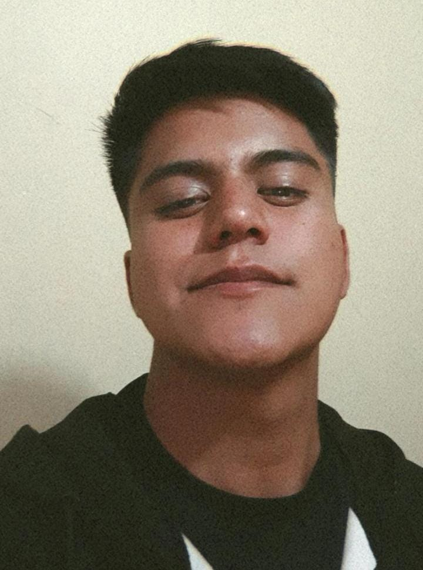
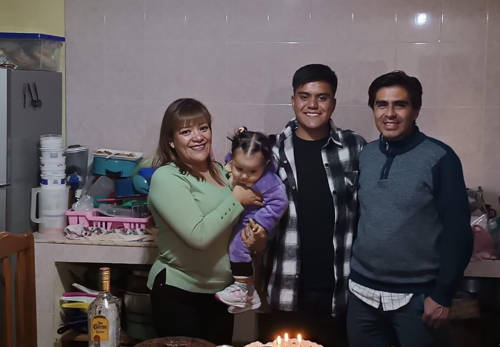
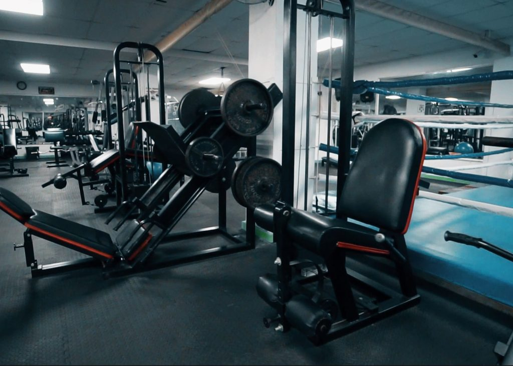

¿Quien soy yo?
Soy alumno de diseño grafico en la Benemerita Universidad Autonoma de Puebla, en la Faculta de Arquitectura, donde ya llevo cursando 7 semestres y hasta el momento estoy comodo con lo que aprendo y puedo llegar a lograr o ejercer. Vengo de un poblado del Estado de Puebla, llamado Libres, Puebla.
Mi familia
Mi familia es mucho de querer ir a lugares, explorar otro paises o contienentes; tal vez hay mucho lugares los cuales visitar, ya que estamos rodeados de mucho turismo, en cualquier parte del planeta, por su riqueza culinaria, gastronimia, belleza, naturaleza, etc. Pero en este caso nosotros tenemos un gusto en particular que es visitar Amsterdam, Paises Bajos. Pero porque Amsterdam, ya que atrae turistas de todos los rincones del planeta debido a su cultura liberal y a sus poco convencionales atracciones. Al ser una de las ciudades europeas más liberales, ofrece una extensa selección de alojamientos, bares y festivales abiertos al colectivo LGTB, además de una pujante cultura del cánnabis con más de 200 cafeterías especializadas en el centro de la ciudad. Ya hasta buscamos un link que no cuenta algunas cosas que tiene la ciudad amsterdam Otro de los principales atractivos de Ámsterdam es el anillo de canales, que cuenta con más de 150 canales y la nada desdeñable cifra de 1281 puentes. La mejor forma de recorrer esta zona es en bicicleta, pero no te olvides de mirar siempre a izquierda y derecha antes de cruzar las calles, ya que algunos ciclistas pueden ir bastante rápido. Aunque parezca increíble, ninguno de estos datos se encuentra en la lista con las once cosas que es posible que no conozcas sobre Ámsterdam, la capital de Holanda. Mi familia es pequeña ya que sl momento de hacer un viaje podemos convivir bien como familia, ya que se compone por:
- Padre: Jose Alvaro Andrade Paz
- Madre: Alejandra Tellez Cosrtes
- Nieta: Emili Andrade Reyes
Mis hobbies
Soy un poco liberal al hacer mis cosas personales, trato de ir variando actividades durante toda la semana, ya que me gusta cocinar, ver videos en YouTube, escuchar musica, hacer mis tareas, ir al gym, salir con mis amigos, estar contestando mensajes, hablar con mis padres, entre otras cosas mas. Pero solo 3 son las que realmente me gusta hacer, las cuales son:
Jugar vieojuegos
Los videojuegos siempre me llamaron la atencion desde muy temprana edad, recordando bien cuando tenia 9 años, siempre que veia a mi primo jugar su consola, siempre me invitbaba a su casa y yo feliz iba y me sentaba a lado de él para ver como le hacia y yo iba aprendiendo. A lo largo de los años se fue convirtiendo en gusto grande, ya que me ayuda a estar en paz cpnmigo mismo ya que es una actividad que disfruto, eso si, trato de no exederme para no lastimarme la vista. En lo particular me gustan mucho los juegos de roll o de acción, siento que eso activa algo en para explorar ciertos gustos o solamente estar entretenido con algo.

Ir al GYM
Hacer deporte es una de las actividades que cualquier persona debería hacer regularmente a lo largo de su vida. Y aunque es algo más que obvio, recomendado por médicos y distintos especialistas en salud, no todo el mundo lo tiene tan claro.Es algo que me gusta hacer, trato de dar un cierto espacio o tiempo, eso si no trato de exederme ya que no quiero ocasionarme alguna lesión. En lo personal quiero mejorar un poco mi cuerpo, tener una mejor resistencia y algo de masa muscular, cuando voy siempre hago de 1 hora y 30 mintos, donde inicio con cardio y ya de ahí me paso a ahacer mi sets, donde trato de entrenar en un día algunas ciertas partes de mi cuerpo.
Jugar baloncesto
El baloncesto es una actividad familiar que todos mis tios lo juegan, desde chico fue algo que me inculco mi papá, ya que queria que yo siguiera sus pasos en este deporte; ya que le gustaba mucho, él tenia 2 equipos de baloncesto, uno donde jugaba él y uno donde era couch y claro yo estaba en ese equipo, me gustaba mucho jugar ya que me sentia comodo porque estaban mis compañeros y un primo y haciamos buen equipo. Ya cuando me adentre más a este deporte, veía a mi papá ver partidos de baloncesto en la televisión y hubo un jugador en especial que me llamo mucho la atención se llama Lebron James, me encantaba su ritmo de juego, el comop controlaba los saltos y hasta como pasaba los balones a sus compañeros de equipo, cuando lo conocí él estaba jugando con los los Cavaliers del 2003 al 2010. Al final de su primera temporada regular, fue nombrado "Novato del año de la NBA", siendo el primer Cavalier en recibir este premio y el jugador más joven en la historia de la liga. Acabó el año con un promedio de 20,9 puntos, 5,5 rebotes y 5,9 asistencias por partido. Desde entonces lo eh seguido porque me inspira demasiado.